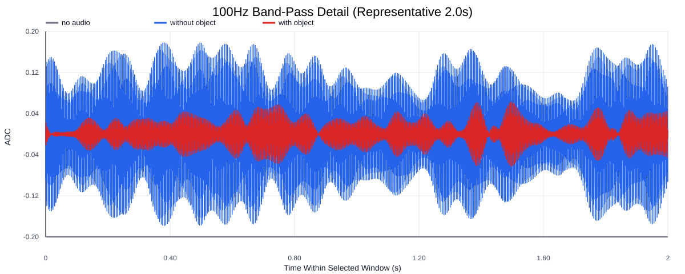
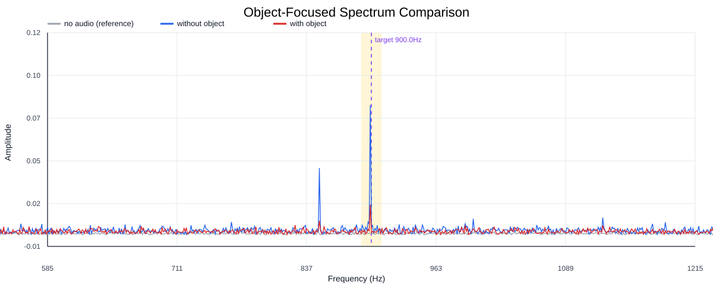
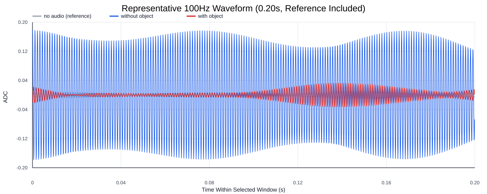
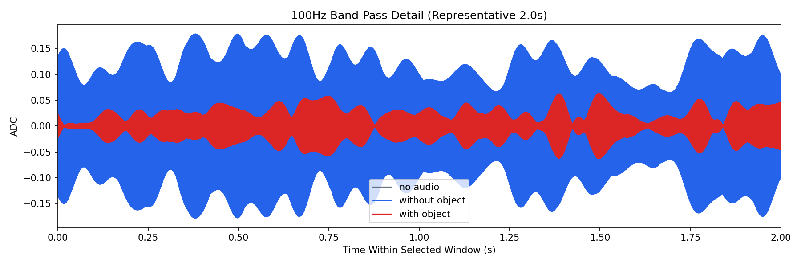
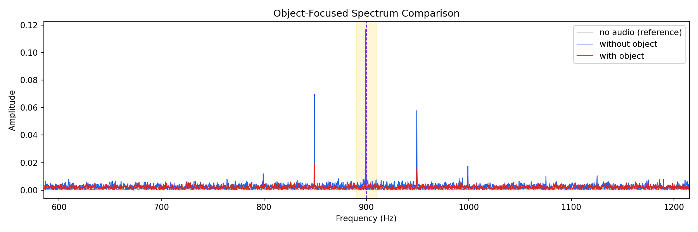
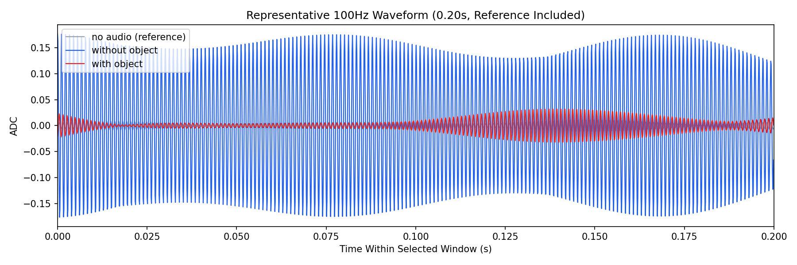

Background: F:\项目类文件夹\异物检测4.10\Data_Dual\frequency_sweep\0900Hz\repeat_03\raw\no_audio.csv
Without object: F:\项目类文件夹\异物检测4.10\Data_Dual\frequency_sweep\0900Hz\repeat_03\raw\without_object.csv
With object: F:\项目类文件夹\异物检测4.10\Data_Dual\frequency_sweep\0900Hz\repeat_03\raw\with_object.csv
| Metric | 无音频 | 100Hz无异物 | 100Hz有异物 | 无异物/无音频 | 有异物/无异物 | 有异物/无音频 |
|---|---|---|---|---|---|---|
| centered_rms | 0.083002 | 0.283758 | 0.217362 | 3.4187 | 0.7660 | 2.6187 |
| raw_target_amp | 0.000713 | 0.004990 | 0.001402 | 7.0031 | 0.2809 | 1.9673 |
| filtered_rms | 0.005877 | 0.082114 | 0.024631 | 13.9731 | 0.3000 | 4.1913 |
| filtered_target_amp | 0.000713 | 0.004990 | 0.001402 | 7.0031 | 0.2809 | 1.9673 |
| filtered_energy_ratio | 0.005013 | 0.083741 | 0.012841 | 16.7059 | 0.1533 | 2.5617 |
| window_filtered_target_amp_mean | 0.006639 | 0.112610 | 0.030816 | 16.9608 | 0.2737 | 4.6414 |
| window_filtered_target_amp_std | 0.004426 | 0.027389 | 0.015239 | 6.1889 | 0.5564 | 3.4434 |





